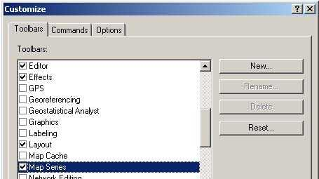

Экспорт макета карты с разрезкой на листы заданного масштаба\размера
Решение задачи с помощью ArcGIS.
Задача: Для некоторой карты любого размера и масштаба, разрезать на листы и экспортировать\напечатать ее с заданным масштабом и печатным размером.
Решение: Использование расширения Mapbook для ArcGIS.
Mapbook – очень удобное расширение позволяющее в автоматическом режиме нарезать карту на листы и экспортировать в нужном формате. Расширение создано ESRI и распространяется бесплатно.
 Загрузка и установка расширения
Загрузка и установка расширения
Расширение доступно в двух вариантах (исходный и модифицированный) для двух версий ArcGIS. Исходная версия - доступна также для загрузки с сайта ESRI. Модифицированная версия (отредактирована GIS-Lab) позволяющая экспортировать результаты работы расширения в формат EPS и исправляющая некоторые ошибки (ArcGIS 8), добавлен экспорт в AI (ArcGIS 9).
Исходная версия |
Модицифицированная версия |
|---|---|
Для начала работы с расширением необходимо его загрузить и инсталлировать, запустив файл _INSTALL.bat.
После запуска ArcGIS, в меню Tools\Customize появится новая панель инструментов – Map Series  . Ее необходимо включить, чтобы она появилась в рабочем окне ArcGIS. Одновременно появляется и третья закладка внизу панели ТОС – Map Book.
. Ее необходимо включить, чтобы она появилась в рабочем окне ArcGIS. Одновременно появляется и третья закладка внизу панели ТОС – Map Book.

 Работа с расширением
Работа с расширением
К резке на листы целесообразно приступать, когда карта полностью сформатирована и готова к выводу на печать. Принцип работы расширения очень прост, оно позволяет виртуально разделить макет карты на некоторое количество макетов меньшего размера, сама карта и основной макет остаются без изменений.
Для работы расширения необходимо, чтобы в виде присутствовала хотя бы одна тема. Вид при этом может быть как спроектированным, так и неспроектированным. Далее нужно создать сетку (grid), по которой будет осуществляться «нарезка» или выбрать существующую сетку, созданную ранее. Для этого нужно нажать третью слева кнопку на появившейся панели – Create/ Update Map Grids  . Появится следующее диалоговое окно:
. Появится следующее диалоговое окно:

При этом можно использовать опции:
- clear existing grids – удалять существующие ячейки, если вы выбрали вариант с существующей сеткой, то можно создать в этой теме ячейки заново, удалив существующие полигоны;
- don’ t create empty grids – не создавать пустые ячейки, в этом случае нужно выбрать тему и проверять наличие объектов из нее в создаваемой ячейке, если объектов в ячейке нет, то ее не создавать.
Однако наиболее простой способ – создать новый слой, который и будет определять разрезку карты на листы. Для этого выбирается опция Create a new layer и в прилегающей строке выбирается или вводится вручную расположение и название файла-сетки. После этого станет активной кнопка Next. При переходе по ней появится следующее диалоговое окно:

В этом окне необходимо ввести желаемый масштаб выходной карты (или оставить установленный в Data Frame) и выбрать координаты левого верхнего и правого нижнего углов карты. Если все слои обрезаны как надо и должны войти в карту, то можно нажать All Layers – границы будут установлены по крайним границам всех тем карты. Если общий экстент карты выведен в View, нужно использовать кнопку Current Extent. Если же границы общей карты достаточно условны, их просто можно «считать» из вида выведя курсор в левый верхний и правый нижний угол карты и ввести вручную (в единицах карты). В любом случае получившуюся сетку можно будет в дальнейшем отредактировать убрав ненужные листы. После перехода по Next появится следующее диалоговое окно:

Здесь необходимо либо согласиться с первой опцией (размер одного листа карты будет соответствовать имеющему место в компоновке), либо ввести вручную ширину и высоту листа в сантиметрах (соответствующие А0-А4 или любого другого). После перехода по Next появится следующее диалоговое окно:

Здесь предлагаются различные варианты нумерации листов выходной карты – буквенные и числовые. Они будут сохранены в атрибутивной таблице темы-шаблона, режущей карту на листы. Нужно выбрать необходимый вариант и нажать « Finish», после чего начнется расчет сетки. Сетка сразу будет добавлена в ТОС на верхний уровень, со сплошной заливкой, которую рекомендуется поменять на прозрачную чтобы можно было посмотреть макет резки относительно карты. На приведенном рисунке полученная сетка показана ярко-фиолетовыми прямоугольниками – это границы листов выходной карты.

После этого необходимо перейти на вкладку MapBook в ТОС. Пока там только одна «строка» - MapBook.

Щелкнув по ней правой кнопкой мыши, выбираем Add Map Series…, в появившемся диалоге нужно выбрать тему – шаблон резки.


Во втором диалоговом окне можно выбрать, будут ли выведены все темы Вида, только видимые или темы, включаемые в выходные листы, будут выбраны особо. В третьем диалоговом окне имеется ряд дополнительных опций, в нашем случае необходимо было получение несколько листов одинакового масштаба.


После этого в разделе MapBook появляется серия карт, которые можно по одной выводить на печать или экспортировать в графические форматы нажатием правой кнопкой мыши на соответствующем листе. Двойными щелчками левой кнопкой мыши по листам карты в Map Series можно просматривать как будут выглядеть определенные листы на выходе.
Далее, щелкнув правой кнопкой мыши на конкретном листе или всей серии, можно экспортировать все листы в нужный формат или распечатать их. Используя модифицированную версию расширения можно экспортировать листы в формат EPS.
Ссылки по теме
Дата создания: 07.12.2004
Автор: Игорь Поспелов (taimyr)